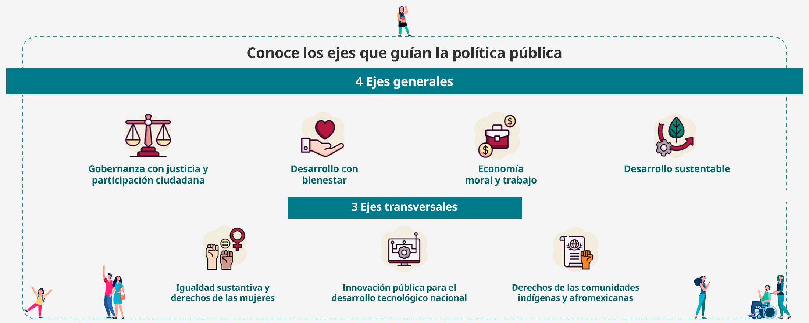

Planeación Estatal 2024-2030
El Plan Estatal de Desarrollo (PED) es el documento en el que la sociedad y el gobierno han definido los grandes objetivos de las políticas públicas y las acciones específicas para alcanzarlos.

En esta sección encontrarás los principios rectores y ejes generales del Plan Estatal de Desarrollo 2024-2030 y sus programas derivados.
Cuenta con una tabla de búsqueda, a través de la cual podrás identificar los programas vinculados a cada principio o eje y acceder a la información sobre sus objetivos e indicadores.
El Plan Estatal de Desarrollo (PED) es el documento en el que la sociedad y el gobierno han definido los grandes objetivos de las políticas públicas y las acciones específicas para alcanzarlos.
Cargando contenido...